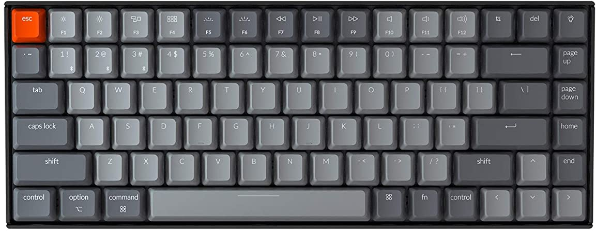
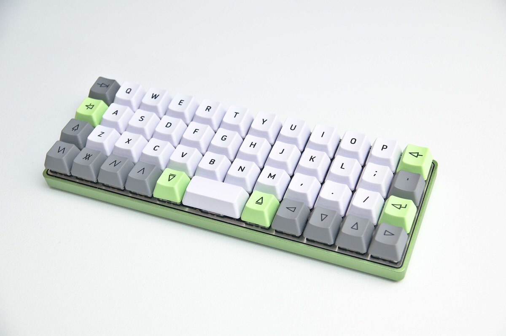
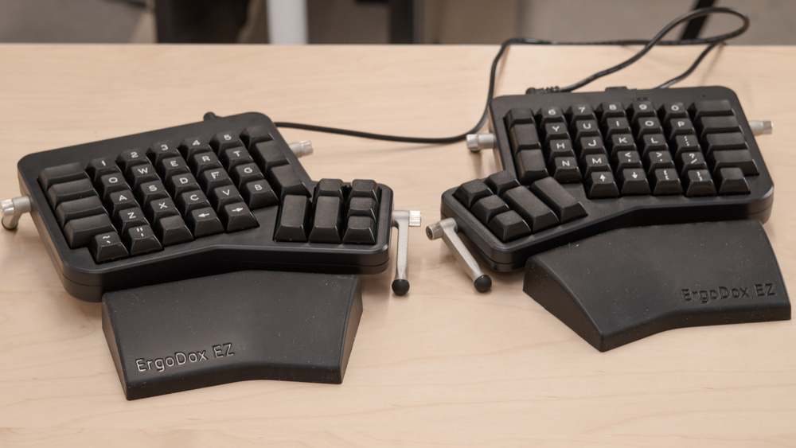

Nesta loja disponibilizo os melhores produtos de informática do mundo. Nela você pode comprar o que quiser pelo melhor preço e qualidade.
Veja a nossa lista de teclados disponíveis:
Um teclado bluetooth com ótimo alcance, que usa as switch Cherry Red excelentes para games. Possui iluminação RGB com mais de 10 efeitos diferentes
Com apenas 44 teclas esse teclado ortolinear vai melhorar sua ergonomia ao trabalhar com código. Suas mão nao precisam fazer um caminho muito longo entre uma tecla e outra. E o melhor, possui firmware QMK o que permite você atualizar gravar quantas macros vc desejar.
Falando em teclado ergonomico e que aceita macros, nao podemos deixar de apresentar o Ergo Dox. Um teclado revolucionario que te ensinará a digitar novamente.
Teclados mais vendidos:
Se você quiser, entre em contato pelo formulário abaixo: